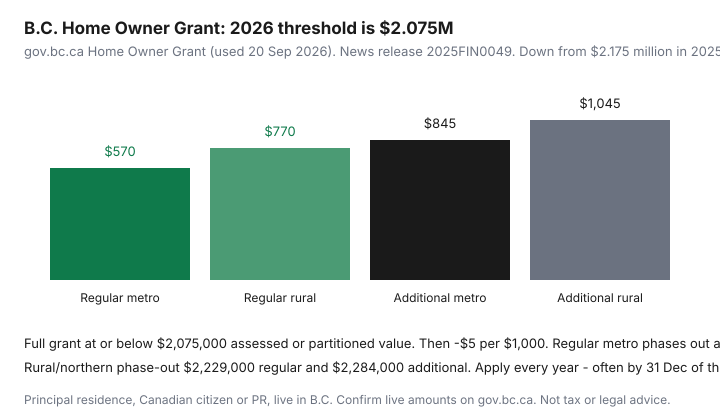

Housing · Canada
B.C. Home Owner Grant: how it reduces property tax and who still qualifies
B.C. owners treat the Home Owner Grant as a law of physics and then underbudget when a July assessment pushes them over the threshold. The grant is real and it is not automatic in the way people mean automatic. It is a dated provincial offset for a principal residence, with a 2026 ceiling that moved down.
gov.bc.ca Home Owner Grant page (used 20 Sep 2026; page also noted a 3 Jul 2026 update in search results) and BC Gov News 2025FIN0049: the 2026 threshold is $2,075,000, down from $2.175 million the year before. BC Assessment’s 2026 roll is a 1 July 2025 value. Full grant at or below the threshold if you otherwise qualify; then a $5 reduction per $1,000 of value.
Disclosure: There is no natural affiliate product in a Home Owner Grant explainer. Saving Optimizer does not claim provincial or municipal partnerships. This is educational shelter-cost math, not tax or legal advice. Confirm live amounts before you file.
Key takeaways
- 2026 full-grant threshold: $2,075,000 assessed or partitioned value.
- Regular: up to $570 (CRD / FVRD / Metro Vancouver) or $770 elsewhere.
- Additional (senior / veteran / disability): up to $845 or $1,045 total.
- Phase-out: $5 per $1,000 over the threshold; metro regular hits $0 at $2,189,000.
- Apply each year. Principal residence, citizen or PR, live in B.C.
What the grant is designed to do
It reduces the property tax you owe on one eligible principal residence so that a chunk of the municipal (or rural provincial) bill is offset. It is not a rebate cheque you spend at the grocery store, and it is not an assessment reduction. The mill rate and the BC Assessment value still set the starting bill. The grant is a named subtraction if you qualify and apply.

Eligibility thresholds and how they change (verify at draft)
| Item | Metro Vancouver / CRD / FVRD | Northern and rural |
|---|---|---|
| Regular (basic) maximum | $570 | $770 |
| Additional maximum (senior / veteran / disability) | $845 | $1,045 |
| Full grant at or below | $2,075,000 assessed or partitioned value | |
| Regular phase-out to $0 | $2,189,000 | $2,229,000 |
| Additional phase-out to $0 | $2,244,000 | $2,284,000 |
Worked reduction: assessed $2,095,000 is $20,000 over the threshold → 20 × $5 = $100 off the grant. A $570 regular metro grant becomes $470. At $2,189,000 the regular metro grant is $0. Last year’s $2.175 million threshold is how people were surprised in 2026 — the house did not need to “go up” much if it was already near the line and the line moved down.
Northern and rural variations at a high level
The extra $200 on the regular grant ($770 vs $570) is the provincial nod to areas outside the Capital, Fraser Valley, and Metro Vancouver regional districts. Additional-grant households pick up the same extra $200 ($1,045 vs $845). Rural phase-out ceilings are higher, so a northern assessment can stay in the grant a little longer. First Nations tax administrations may offer an equivalent — contact the First Nation; do not assume the municipal form works on reserve.
Application or automatic application paths by municipality
gov.bc.ca apply page (updated 31 Aug 2026): you must apply each year. Many city tax notices let you claim online or on the stub; some pre-populate if you qualified last year. That pre-populate is a convenience, not a legal finding that you still qualify. You can generally apply until 31 December of the tax year even if the bill is unpaid. Only one qualifying owner claims per property. The additional-grant applicant must be the senior, veteran, or person with a disability (or the qualifying surviving spouse/relative). Anyone you authorize can click the form; the eligibility is still yours. Audits can look back seven years.
Common disqualification mistakes
- Claiming the grant on a vacant condo you rent out, or on two properties.
- Assuming a recreational property is a principal residence because you spend August there.
- Forgetting the citizen / permanent-resident and “live in B.C.” tests.
- A mid-year sale without reading the buying-and-selling rules — both households can get this wrong.
- Ignoring a threshold letter and then treating the full $570 as if it still applies.
- Skipping the additional-grant application when a household member would qualify and should be the applicant.
How the grant fits a total shelter budget
On a labelled $6,000 Metro Vancouver tax bill, a $570 regular grant is about 9.5% of that line — real, and smaller than a thin-reserve strata special or an insurance deductible. Put it next to the strata-first stack, not instead of reading Form B. If you lose the grant because you crossed $2,075,000, the monthly escrow or self-pay PAD needs to rise the same year. Pair with the assessment-review page if the 1 July 2025 value looks wrong; PARP for the 2026 roll has already passed (2 Feb 2026), so you are in next-year territory unless a late-complaint path applies.
Where to confirm current-year amounts
Start at gov.bc.ca Home Owner Grant (also gov.bc.ca/HOMEOWNERSGRANT) and the apply page. The news release is useful history for the $2.075 million figure and the metro/rural dollar amounts. BC Laws Home Owner Grant Regulation is where the threshold is prescribed. Your municipal tax insert is where the claim button lives. If the three disagree, the provincial pages and your notice win — not a blog from 2024 that still says $2.175 million.
Sources & date stamps
- gov.bc.ca, Home Owner Grant — 2026 threshold $2,075,000; eligibility; $5 / $1,000 reduction (used 20 Sep 2026).
- gov.bc.ca, Apply for the home owner grant — annual application; 31 Dec window; 7-year audit (updated 31 Aug 2026).
- BC Gov News 2025FIN0049 — $570 / $770 regular; $845 / $1,045 additional; phase-out ceilings; threshold down from $2.175M.
- B.C. Home Owner Grant Regulation — prescribed threshold $2,075,000.
- BC Assessment — 2026 roll value as of 1 Jul 2025.
Frequently asked questions
What is the B.C. Home Owner Grant in 2026?
A provincial reduction on the property-tax bill for an eligible principal residence. The 2026 full-grant threshold is $2,075,000 of assessed or partitioned value (gov.bc.ca; B.C. Reg. threshold amount). Regular grant up to $570 in Metro Vancouver, Capital, and Fraser Valley regional districts, or $770 elsewhere. Additional grant for seniors, veterans, and people with a disability totals up to $845 or $1,045.
What if my assessment is above $2,075,000?
You may still get a reduced grant: $5 less for each $1,000 of value over the threshold. Regular metro phases out at $2,189,000; additional metro at $2,244,000. Rural/northern phase-out is $2,229,000 regular and $2,284,000 additional (BC Gov News 2025FIN0049). Low-income seniors may have a supplement path if the home is over the threshold — confirm on gov.bc.ca.
Do I have to apply every year?
Yes. gov.bc.ca (apply page, updated 31 Aug 2026): apply each year, generally up to 31 December of the tax year, even if you have not paid the taxes yet. Some municipalities apply it on the notice if you qualified last year — still verify. Applications can be audited for up to seven years.
Who gets disqualified?
Not the registered owner (with limited spouse/relative-of-deceased exceptions), not a Canadian citizen or permanent resident, not living in B.C., not occupying as a principal residence, claiming on more than one property, or assuming a vacant investment condo qualifies because you “might move in.” Buying and selling mid-year has extra rules — read the province’s page.
Is this tax advice?
No. Educational shelter-cost offset. Confirm current-year amounts on gov.bc.ca. There is no natural affiliate product on this page.